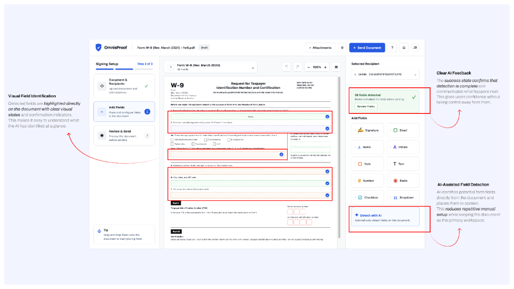

From manual document setup to effortless signing.
Legal teams shouldn't have to wrestle with complicated workflows to send a document for signature. The task is straightforward, yet it often involves multiple steps, hidden documents, and repetitive field placement. All of that adds friction before a document reaches the signer.
I redesigned OmnisProof's signing setup so legal teams move from document to signature with less effort: upload, field placement and AI assistance in one self-serve flow.

Making document signing simpler from the very first step.
OmnisProof is a dedicated e-signing platform built for high-velocity legal workflows.
We eliminated disjointed modal wizards and automated manual field placement into a single guided workspace.
The redesign tackles three major bottlenecks across the preparation lifecycle.
01 · Too many steps before sending a document
Preparing a document for signature involved moving through multiple screens and disconnected steps. Users had to work through the setup process before they could place signature fields.
We're building a single, guided workspace where users can upload a document, configure signing details, and prepare it for sending, all in one continuous flow.

02 · Manual field placement slows everything down
Placing signature fields manually across lengthy legal documents is repetitive, time-consuming, and easy to get wrong. Users had to scan documents to determine where each person needed to sign.
We're building AI-assisted field detection that identifies potential signing locations and suggests where fields belong, while keeping users in control of reviewing and confirming them.

03 · Making document preparation easier to manage
Legal teams work with different document types, signing requirements, and workflows. The experience needed to support these variations without adding more complexity.
We're building a flexible signing experience that supports document uploads, reusable templates, and existing files, giving teams more ways to start and complete their signing workflow.

Turn document signing from a multi-step chore into a straightforward, guided experience that legal teams can complete with confidence.
The document execution layer inside a legal AI ecosystem.
OmnisProof is the document execution layer of the Omnis legal AI ecosystem. It turns a drafted agreement into a signed, filed legal record: prepare, assign signers, place fields, send and track, without leaving the platform.
It sounds like the easy part. But drafting, matter tracking and client portals all produce documents that end up here. If signing is slow or error-prone, it undermines everything upstream.
Engineering had shipped a working MVP: a 4-step wizard (General Info → Add Signers → Add Fields → Distribute) modelled on e-signature admin panels. It covered every setting, but not how lawyers work. The document didn't appear until step three.
Leadership pitched OmnisProof as a full DocuSign replacement. That pitch fails if our setup is slower and clumsier than DocuSign's. When I took over, that gap was the most-cited risk in product reviews.
We didn't have time for a full research cycle. We looked at the strongest signals available.
No research budget and no access to law firms before launch. So I combined all the signals that existed: walkthroughs with 2 lawyers and a paralegal, the PM's testing notes, a teardown of 5 competitors, and G2 & Capterra reviews.
The same pattern kept showing up across all sources:
- Users could complete each step of the wizard but lost track of which document they were configuring
- Manual field placement was the single largest source of both time spent and errors made
- Reviewers of competitor tools described documents sent with a missing field or the wrong recipient, discovered only after the fact
Walkthroughs surfaced it, the PM's testing reproduced it, and reviews showed a category-wide failure mode nobody had solved. That's why it beat other roadmap items.
Lawyers
Prepare agreements for signature and are accountable if anything goes out wrong.
Paralegals
Do most of the day-to-day document prep across many matters.
Legal assistants
Often prep the document on an attorney's behalf, then hand it back to send.
At Omnis, "user," "attorney," and "legal team" are used interchangeably in internal docs. They all mean the same person here: whoever is sitting in OmnisProof getting a document ready to send.
Legal teams need a way to prepare and send documents for signature that doesn't require them to become experts in field placement, or lose sight of the document itself while configuring it.
General Info
Enter document details and settings.
Document not visible until step 3Add Signers
Add recipients and set their roles.
Multiple steps create frictionAdd Fields
Place signature, initials, date and other fields by hand.
Manual field placement is time-consumingDistribute
Review and send the document.
Errors often discovered after sending
Upload document
Add your document and see it on screen.
Document visible from the startAI suggests fields
AI detects fields and suggests them.
AI reduces manual workReview & edit
Review, adjust or add fields as needed.
Fewer errors with built-in guidanceAdd signers
Assign recipients and set their roles.
Streamlined signer setupSend
Finalize and send the document.
Faster, more confident sending
Configuring a document correctly was the hard part. Getting it into the system was easy.
I ran a structured teardown of DocuSign, Adobe Sign, Dropbox Sign, PandaDoc, and Documenso: their public documentation, review-site screenshots, and (where available) free-tier trials.
Key insight: getting a document in is solved everywhere, including our MVP. The unsolved part sits between "uploaded" and "ready to send": field placement, recipients, and catching mistakes before they go out.
That reframed the direction of the whole project: let the system handle more of the setup, and let users review and correct only what needs their attention, instead of making manual configuration slightly faster.
Mapping the fragmented baseline against the streamlined workflow
Client intake
Where it happensCRM / case managementCreate / draft agreement
Where it happensWord / drafting toolInternal review & approval
Where it happensEmail / doc sharingExport as PDF
Where it happensLocal folder / deviceUpload to e-sign platform
Where it happensDocuSign / other e-signAdd recipients & signature fields
Where it happensE-sign platformSend to client
Where it happensE-sign platformFollow up & track progress
Where it happensEmail / e-sign dashboardDownload signed agreement
Where it happensLocal folder / deviceUpload to practice management
Where it happensPractice mgmt systemClose / update matter
Where it happensPractice mgmt system
Create agreement
Start from scratch or an existing template.
Prepare document
Add content, templates and AI field suggestions.
Configure signers
Assign signers, roles, signing order and authentication.
Review & approve
Review internally before anything is sent.
Send for signature
Email signers with built-in notifications.
Track progress
Real-time status, reminders and signer activity.
Completed
Every party has signed.
Store & manage
Audit trail, document history and matter records.
From 11 steps across 6 tools to 8 steps in one system. Before OmnisProof, legal teams bounced between Word, email, local folders, an external e-signature platform and practice-management software to execute a single contract.
Not "redesign the interface": decide which complexity stays with the user, and which the system should absorb.
Field placement was required, but too heavy to leave manual
Every document needs signature, date, name, and initials fields placed correctly before it can go out. This step couldn't be removed, but making users place every field on every page by hand was the largest time cost we'd identified.
Turn field placement from a manual task into a system-assisted one: AI detects and proposes placement, the user reviews and corrects only where needed.
Deep dive 01The 4-step structure mapped to something real, but hiding the document behind it didn't
"Who's involved → what goes where → is it ready to send" is how document prep works. The three-stage logic was fine. Presenting each stage as a separate full screen hid the document being configured.
Keep the underlying stages, rebuild the presentation as one page: the document stays visible at all times, with a persistent step tracker and a side panel that changes per stage.
Deep dive 02No direct access to external users
Each decision below needed some form of validation, but law firms weren't reachable pre-launch. Relying only on internal opinion risked designing for people who already trust the product.
Validate with internal legal professionals as a proxy, cross-check against competitive review-site complaints as external signal, and label each claim with its actual confidence level instead of letting it read as more validated than it is.
The fix had to ship inside the existing timeline
The competitive gap was already being cited as a risk in product reviews. A ground-up redesign of the entire setup experience wasn't realistic in the time available.
Scope to the two moments with the clearest evidence of friction (field placement and the wizard structure) rather than trying to fix every part of document prep at once.
How do you make legal professionals trust an AI that places their signature fields?
Placing every field by hand, for every recipient, took the largest share of prep time and caused each placement mistake we saw. Automating was easy. Trust was hard: a wrong AI guess sends a contract to the wrong person.
Testing three ways to introduce AI field detection
Automatic, silent placement
AI detects and places each field the moment a document is uploaded. No review step: the fields are there, ready to send.
Chat-based AI assistant
A conversational interface where the user could type "place a signature field for Lucas on page 3" and the AI would execute it.
Inline, reviewable "Detect with AI"
One button inside the existing field panel. Clicking it places suggested fields on the document, using the same drag-and-edit interaction as a manually placed field.
The shipped loop: the AI proposes, the user disposes

Designing for failure and non-standard inputs
Non-standard or custom field types that fall outside the seven types the model recognizes (signature, date, name, initials, title, email, text) aren't guessed at: they're left for manual placement using the same field library, with no error state implying something went wrong.
Scanned documents with non-selectable text can't be reliably parsed by the detection model. "Detect with AI" stays visible but shows a clear inline message explaining why detection isn't available for this file, instead of failing or returning wrong guesses.
A user rejects most suggestions on one document. The next document still gets a fresh detection pass. The real risk is someone deciding "the AI doesn't work" and switching it off. Trust recovery is untested, so I flag it as open.
Observed walkthrough validation
Suggestions accepted without edits
Across 6 internal prototype walkthroughs. The 28% that got adjusted is why each suggestion stays editable instead of final.
Standard field types reliably auto-detected
Signature, date, name, initials, and title. Email and free-text fields still default to manual placement.
Participants who distrusted AI output after the redesign
The same lawyer who moved every field under silent automation left correct suggestions untouched once placement became visible.
The signing setup was a 4-step modal wizard. I collapsed it into one page without losing control.
The MVP stacked four full-screen steps as a modal over the document list, each with its own settings. The document wasn't visible until step three, so people lost track of what they were setting up.


Same three stages, one page instead of four screens
- Left: the 3 stages kept, now as a tracker instead of screens.
- Centre: the document never leaves the middle of the screen.
- Right: “Detect with AI” proposes fields; the user reviews.
Exploring layouts for progressive disclosure
Delete the steps
Strip the wizard down to one dense screen: recipients, fields, document preview, and settings all visible at once. Fewer screens, assumed to mean faster.
Merge General Info into Add Signers
A smaller fix: combine the first two steps into one, going from four screens to three, keeping the rest of the wizard structure intact.
Same 3-stage logic, one persistent page
Keep Document & Recipients → Add Fields → Review & Send as the underlying structure, but render it as three states of a single page: a persistent step tracker on the left, the document centered, and a right-hand panel whose content changes per stage.
Replacing 4 fragmented screens with 1 persistent workspace
The redesign removes the cognitive disconnect by keeping the document visible at all times, so users never configure blind.
| Dimension | Before · 4-step wizard | After · 1 guided page |
|---|---|---|
| Document Visibility | Hidden behind modal until Step 3 | 100% visible from second zero |
| Field Placement | 100% manual drag & drop | AI detection + 1-click review |
| Navigation Friction | 4 disconnected full screens | 1 persistent page + 3 panel states |
| Error Recovery | Back-button loop across screens | Instant inline step switching |
| User Mental Model | Felt like "a cockpit" / form filling | Direct document interaction |
Handling changes and missing fields
A recipient is added after fields are already placed. Any field already assigned to a now-invalid configuration is flagged inline in the field panel instead of being reassigned, so the user makes the call on where it belongs.
A required field is missing at Review & Send. Step 2 gets flagged and Send stays disabled with an inline reason: the same error pattern as field mapping, so users learn one style.
The same two lawyers who were lost in both the old wizard and the "cockpit" completed the new flow without a single question. Small sample, but the same people and task, before and after.
The complexity didn't disappear. It moved from the user to the system.
The two heaviest jobs moved to the system: AI proposes fields, and the three stages live on one page where the document never leaves view. Users now review and correct instead of configuring blind.
| Category | What we have |
|---|---|
| Validated | 6 internal prototype walkthroughs with lawyers and legal assistants inside our organization. Both redesigns tested against the same two participants before and after. ~72% of AI field suggestions accepted without edits. The participant who distrusted silent AI placement left correct suggestions untouched after the redesign. |
| Qualitative | "I didn't see it place them, so I don't trust them" (on the rejected silent-AI iteration). "This looks like a cockpit" (on the rejected single-screen iteration). Both quotes came from the same two-person internal test group and shaped the shipped design. |
| Not yet validated | Production usage data (setup completion rate, time-to-complete, support ticket volume): the feature is live but hasn't been in market long enough to generate meaningful telemetry. External law firm feedback: still untested outside our own organization. |
Designing for confidence as well as completion.
Redesigning OmnisProof taught me to simplify a workflow by making each step clear, purposeful, and easy to recover from.
Legal teams need to send documents quickly and need confidence that the right document reaches the right people, with the right fields, without extra back-and-forth.
Put the document at the center. Users should keep sight of the thing they're working on. Keeping the document visible turned a configuration-heavy process into an understandable workspace.
Let AI handle the repetitive work. AI is most useful when it removes tedious tasks while keeping users in control. Suggested fields reduce manual effort, but review and approval remain with the person preparing the document.
Good UX makes complex systems feel simple. The signing workflow involved documents, recipients, fields, permissions, and delivery settings. I organized that complexity so users could move through it.

With more time and access to real usage data, I'd focus on:
- Testing the redesigned workflow with external law firms.
- Understanding how users interact with AI suggestions over time.
- Exploring smarter detection for complex document fields.
- Measuring setup time, completion rates, and correction patterns.
Great product design doesn't remove complexity. It makes complexity feel effortless.
OmnisProof gave me a chance to rethink how legal teams prepare documents: keep the essential steps and make each interaction clearer, more intentional, and easier to trust.
Less manual work, more clarity, and more confidence in each signature.
That's the kind of experience I believe legal technology should deliver.
Anticipated questions on these two problems.
Why only two problems instead of the whole product?
How confident are you in the 72% AI-acceptance number?
Why didn't you just delete the wizard's steps to simplify it?
What would you do differently with more time or budget?